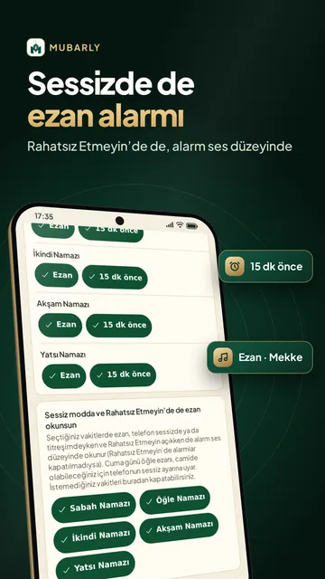
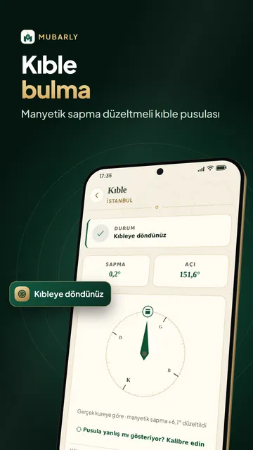
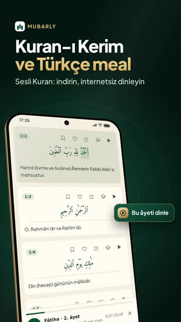
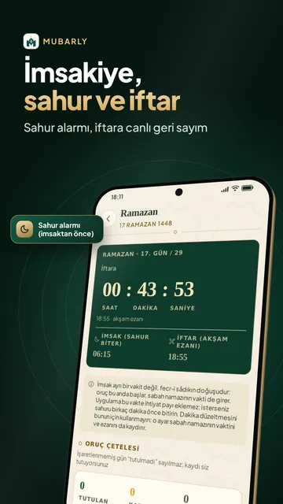
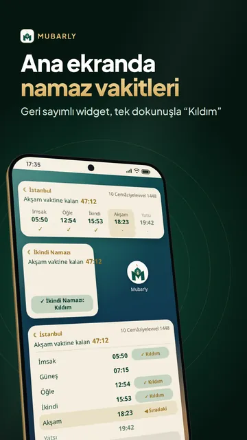
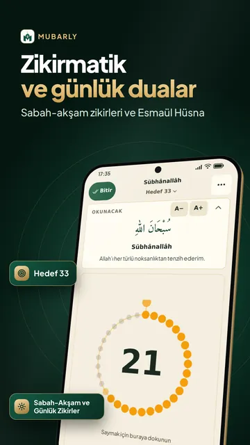
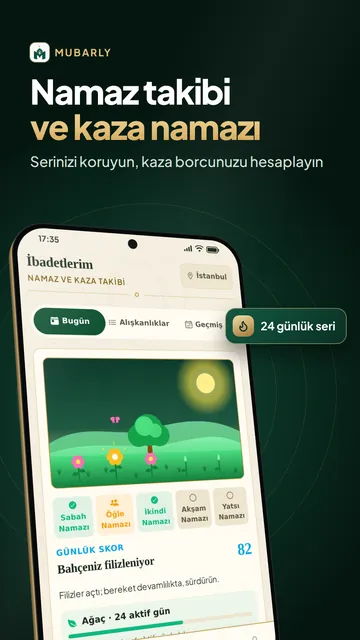

Namaz vakitleri ve ezan vakti







Mubarly ile namaz vakitleri ve ezan vakti, kıble pusulası, Kuran-ı Kerim ve meali, imsakiye, dualar ve zikirmatik tek uygulamada. Ezan alarmı, telefonunuz sessizdeyken ya da Rahatsız Etmeyin açıkken de alarm ses düzeyinde çalabilir; vakitler ve ezan saatleri internetsiz çalışır. Türkiye'nin 81 ili ve tüm ilçeleri, Almanya, Hollanda, Belçika, Avusturya ve dünyanın her yeri için namaz vakitleri telefonda hesaplanır.
Namaz vakitleri ve ezan
- Türkiye yöntemi: 853 ilçe takvimiyle karşılaştırmamızda vakitlerin %99'undan fazlası dakikası dakikasına tuttu; imsak hiçbir gün takvimdekinden geç, iftar hiçbir gün takvimdekinden erken çıkmadı
- Her namaz vakti için ayrı ezan alarmı ve vakitten önce hatırlatma; ses seçimi: Mekke, Medine ya da Balkan makamı (üçü de ezanın ilk tekbirleri)
- Adım adım kurulum: gereken izinler ve pil ayarları yapılır; ezan gecikebilecek ya da sessiz kalabilecekse uyarır
- Ana ekran widget'ları: sıradaki ezan vakti ve geri sayım, günün namaz vakitleri; widget'tan tek dokunuşla “Kıldım”
- 30 günlük vakit çizelgesi (PDF), hicri takvim, dini günler ve kandil geceleri
Ramazan: sahur ve iftar
- Sahur alarmı imsaktan önce alarm ses düzeyinde, sessizde de çalabilir; “Uyandım”a dokunmazsanız 3 ve 6 dakika sonra yine çalar
- İftara ne kadar kaldı, sahur ne zaman bitiyor: canlı geri sayım; akşam ezanıyla iftar bildirimi
- Ramazan imsakiyesi 2027: Ramazan'a kalan gün sayısı, ay başlayınca imsak ve iftar 30 günlük çizelgede; oruç hükümleri mezhebinize göre, Türkiye için fitre tutarı
Kıble pusulası ve camiler
- Manyetik sapma düzeltmeli kıble pusulası; telefon dik dursa da kıble yönü doğru, metal yakınsa uyarır
- Pusulasız kıble bulma: güneşe göre kıble saati
- Yakındaki camiler: dünyada 300.000'den fazla cami haritada, yol tarifi ve kıble çizgisi; Camim ile cemaat vakitleri
Kuran-ı Kerim
- Osmanî hat ya da imlâî yazım ve 604 sayfalık mushaf; Arapça metin internetsiz açılır
- Türkçe meal; internetle kelime meali ve tefsir; mealli dinlemede ayet mealini telefon sesli okur
- Sesli Kuran dinleme: Abdülbasit Abdüssamed gibi 9 ünlü hafız, ayet tekrarı
- Yasin, Mülk (Tebareke) ve Kehf gibi sık okunan sureleri, namaz sureleri dahil Amme cüzünü ya da Kur'an'ın tamamını indirip internetsiz dinleyin
- Elif-Ba ile Kur'an öğrenme: harflerden başlayan yedi ders
Dualar, zikirmatik ve Esmaül Hüsna
- Sabah-akşam zikirleri, günlük dualar: 55 zikir, her biri hadis kaynağıyla
- Zikirmatik: hedefli tesbih, namaz tesbihatı ve zikir geçmişi
- Esmaül Hüsna: Allah'ın 99 ismi ve anlamları; Cevşen'den seçmeler
- Hadisler, Kırk Hadis, peygamberler ve İslam tarihi
Namaz takibi ve kaza namazı
- Namaz takibi: vaktinde, geç ya da cemaatle kıldığınızı işaretleyin; seriniz uzasın, ibadet bahçeniz büyüsün; kadınlar için özel hal takibi
- Kaza namazı hesaplama ve takip: kılınmamış vakitler ve oruç borcu mezhebinize göre
Rehberler, zekat ve hatim
- Namaz rehberi: namaz nasıl kılınır, abdest ve gusül adım adım
- Hac ve umre rehberi: menasik adım adım, umre duaları, tavaf ve sa'y sayacı, hazırlık listesi
- Zekat hesaplama: altın, gümüş ve nakit, güncel gram fiyatıyla ya da kendi fiyatınızla
- Hatim Halkası ile cüz dağıtma, Aile Modu ve Kardeşlik: dua isteyin, “Âmin” deyin; üyelik gerekmez
Dört mezhep
Mubarly her Müslüman için: ikindi vakti, oruç, kaza, zekat ve yolculuk hükümleri ile namaz rehberi seçtiğiniz mezhebe (Hanefi, Şafii, Maliki ya da Hanbeli) göre gösterilir. Türkçe, Kürtçe ve Arapça dahil 20 dil; büyük yazılı Basit Mod ve koyu tema.
Premium
Namaz vakitleri, Kuran ve tüm ibadet bölümleri herkese ücretsizdir. Premium ile reklamlar kalkar; Hafızlık Modu, Uyku ve Tefekkür, ek pusula ve zikirmatik temaları açılır; kısa bir video izleyerek Premium'u birkaç saatliğine de açabilirsiniz. Tam ekran reklam yoktur; Kuran, ezan, kıble ve zikirmatik ekranlarında reklam gösterilmez.
Gizlilik: Hesap gerekmez; Google ile giriş yalnızca yedekleme ve eşitleme içindir. Konum arka planda alınmaz, kamera ve mikrofon kullanılmaz. Mubarly verilerinizi satmaz.